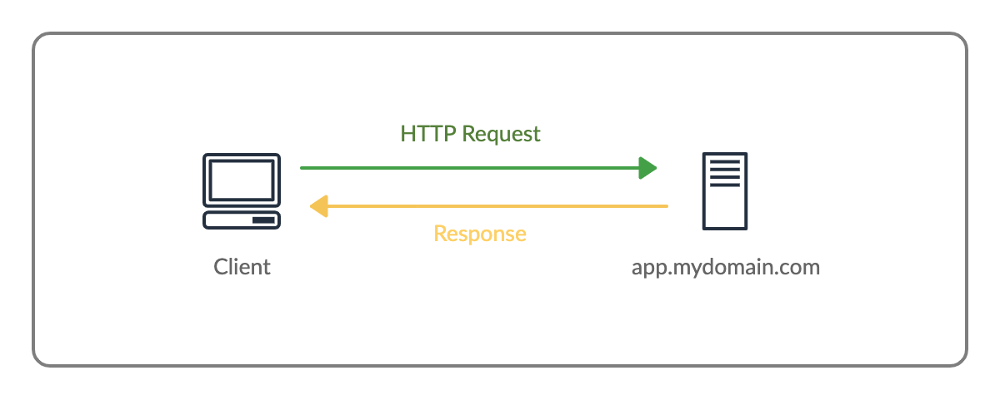

| Version | Year | Features |
|---|---|---|
| HTTP/1.0 | 1996 | Headers, status codes |
| HTTP/1.1 | 1997 | Persistent connections |
| HTTP/2 | 2015 | Multiplexing |
| HTTP/3 | 2022 | QUIC protocol |
HTTP uses a request-response model where a client sends a request to a server, and the server responds with the requested data.

Figure: HTTP request and response process